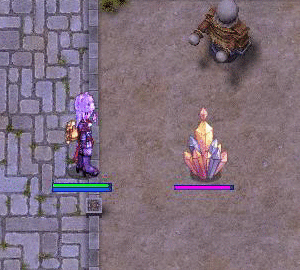
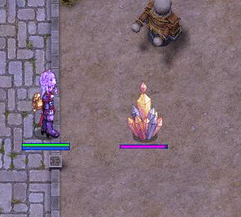
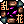
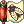

Uploads by Pruu
This special page shows all uploaded files.
| Date | Name | Thumbnail | Size | Description | Versions |
|---|---|---|---|---|---|
| 11:13, 10 January 2016 | Throw Kunai.png (file) |  |
477 bytes | for use in Pruu's Guide to Kagerou/Oboro for PVM | 1 |
| 11:08, 10 January 2016 | Kageoboro.png (file) | 115 KB | for use in Pruu's Guide to Kagerou/Oboro for PVM | 1 | |
| 23:10, 9 January 2016 | Disorted16thNight.gif (file) |  |
1.61 MB | 2 | |
| 23:06, 9 January 2016 | DisortedMaxHPSP.gif (file) |  |
2.14 MB | 2 | |
| 23:00, 9 January 2016 | AfterCharm.gif (file) |  |
2.12 MB | 2 | |
| 22:55, 9 January 2016 | ShadowHidingLeapTricks.gif (file) |  |
3.06 MB | 3 | |
| 22:45, 9 January 2016 | BlazeShieldTrick Scaled.gif (file) |  |
3.3 MB | for use in Pruu's Guide to Kagerou/Oboro for PVM | 1 |
| 21:59, 9 January 2016 | First Wind Scaled.gif (file) |  | 1.85 MB | 1 | |
| 21:58, 9 January 2016 | Freezing Spear Scaled.gif (file) |  | 3.22 MB | for use in Pruu's Guide to Kagerou/Oboro for PVM | 1 |
| 21:58, 9 January 2016 | Flaming Petal Scaled.gif (file) |  |
2.96 MB | for use in Pruu's Guide to Kagerou/Oboro for PVM | 1 |
| 15:36, 7 January 2016 | Kageoboro.jpg (file) | 49 KB | 2 | ||
| 15:25, 7 January 2016 | BlazeShieldTrick.gif (file) |  |
6.43 MB | for use in Pruu's Guide to Kagerou/Oboro for PVM | 1 |
| 15:24, 7 January 2016 | Wind Blade.png (file) |  |
542 bytes | for use in Pruu's Guide to Kagerou/Oboro for PVM | 1 |
| 15:23, 7 January 2016 | Watery Evasion.png (file) |  |
557 bytes | for use in Pruu's Guide to Kagerou/Oboro for PVM | 1 |
| 15:23, 7 January 2016 | Swirling Petal.png (file) |  | 484 bytes | for use in Pruu's Guide to Kagerou/Oboro for PVM | 1 |
| 15:23, 7 January 2016 | Snow Flake Draft.png (file) | 522 bytes | for use in Pruu's Guide to Kagerou/Oboro for PVM | 1 | |
| 15:23, 7 January 2016 | Shadow Trampling.png (file) |  |
407 bytes | for use in Pruu's Guide to Kagerou/Oboro for PVM | 1 |
| 15:23, 7 January 2016 | Shadow Leap.png (file) | 551 bytes | for use in Pruu's Guide to Kagerou/Oboro for PVM | 1 | |
| 15:22, 7 January 2016 | Shadow Hiding.png (file) |  |
422 bytes | for use in Pruu's Guide to Kagerou/Oboro for PVM | 1 |
| 15:22, 7 January 2016 | Release Ninja Spell.png (file) | 501 bytes | for use in Pruu's Guide to Kagerou/Oboro for PVM | 1 | |
| 15:22, 7 January 2016 | Rapid Throw.png (file) | 480 bytes | for use in Pruu's Guide to Kagerou/Oboro for PVM | 1 | |
| 15:22, 7 January 2016 | Pure Soul.png (file) |  |
410 bytes | for use in Pruu's Guide to Kagerou/Oboro for PVM | 1 |
| 15:22, 7 January 2016 | Ninja Mastery.png (file) |  |
534 bytes | for use in Pruu's Guide to Kagerou/Oboro for PVM | 1 |
| 15:21, 7 January 2016 | Ninja Aura.png (file) |  |
522 bytes | for use in Pruu's Guide to Kagerou/Oboro for PVM | 1 |
| 15:21, 7 January 2016 | Mirror Image.png (file) |  |
491 bytes | for use in Pruu's Guide to Kagerou/Oboro for PVM | 1 |
| 15:21, 7 January 2016 | Makibishi.png (file) |  |
446 bytes | for use in Pruu's Guide to Kagerou/Oboro for PVM | 1 |
| 15:21, 7 January 2016 | Lightning Jolt.png (file) |  |
501 bytes | for use in Pruu's Guide to Kagerou/Oboro for PVM | 1 |
| 15:20, 7 January 2016 | Kunai Splash.png (file) |  |
485 bytes | for use in Pruu's Guide to Kagerou/Oboro for PVM | 1 |
| 15:20, 7 January 2016 | Kunai Explosion.png (file) | 517 bytes | for use in Pruu's Guide to Kagerou/Oboro for PVM | 1 | |
| 15:20, 7 January 2016 | Killing Stroke.png (file) |  |
509 bytes | for use in Pruu's Guide to Kagerou/Oboro for PVM | 1 |
| 15:19, 7 January 2016 | Illusion-Shadow.png (file) |  |
442 bytes | for use in Pruu's Guide to Kagerou/Oboro for PVM | 1 |
| 15:19, 7 January 2016 | Freezing Spear.png (file) |  |
516 bytes | for use in Pruu's Guide to Kagerou/Oboro for PVM | 1 |
| 15:19, 7 January 2016 | Flip Tatami.png (file) |  |
468 bytes | for use in Pruu's Guide to Kagerou/Oboro for PVM | 1 |
| 15:19, 7 January 2016 | Flaming Petals.png (file) | 531 bytes | for use in Pruu's Guide to Kagerou/Oboro for PVM | 1 | |
| 15:18, 7 January 2016 | First Wind.png (file) |  |
546 bytes | for use in Pruu's Guide to Kagerou/Oboro for PVM | 1 |
| 15:18, 7 January 2016 | Exploding Dragon.png (file) |  |
575 bytes | for use in Pruu's Guide to Kagerou/Oboro for PVM | 1 |
| 15:18, 7 January 2016 | Empty Shadow.png (file) | 403 bytes | for use in Pruu's Guide to Kagerou/Oboro for PVM | 1 | |
| 15:18, 7 January 2016 | Distorted Crescent.png (file) |  |
577 bytes | for use in Pruu's Guide to Kagerou/Oboro for PVM | 1 |
| 15:18, 7 January 2016 | Dagger Throwing Practice.png (file) |  |
505 bytes | for use in Pruu's Guide to Kagerou/Oboro for PVM | 1 |
| 15:17, 7 January 2016 | Cicada Skin Shed.png (file) |  | 520 bytes | for use in Pruu's Guide to Kagerou/Oboro for PVM | 1 |
| 15:17, 7 January 2016 | Charm-Wind.png (file) |  |
413 bytes | for use in Pruu's Guide to Kagerou/Oboro for PVM | 1 |
| 15:17, 7 January 2016 | Charm-Ice.png (file) |  |
437 bytes | for use in Pruu's Guide to Kagerou/Oboro for PVM | 1 |
| 15:17, 7 January 2016 | Charm-Fire.png (file) |  |
456 bytes | for use in Pruu's Guide to Kagerou/Oboro for PVM | 1 |
| 15:16, 7 January 2016 | Charm-Earth.png (file) |  |
415 bytes | for use in Pruu's Guide to Kagerou/Oboro for PVM | 1 |
| 15:16, 7 January 2016 | Cast Ninja Spell.png (file) | 574 bytes | for use in Pruu's Guide to Kagerou/Oboro for PVM | 1 | |
| 15:16, 7 January 2016 | Blaze Shield.png (file) | 566 bytes | for use in Pruu's Guide to Kagerou/Oboro for PVM | 1 |
{kind=link}
{kind=link}
{kind=link}
{kind=link}
{kind=link}
{kind=link}
{kind=link}
{kind=link}
{kind=link}
{kind=link}
{kind=link}
{kind=link}
{kind=link}
{kind=link}